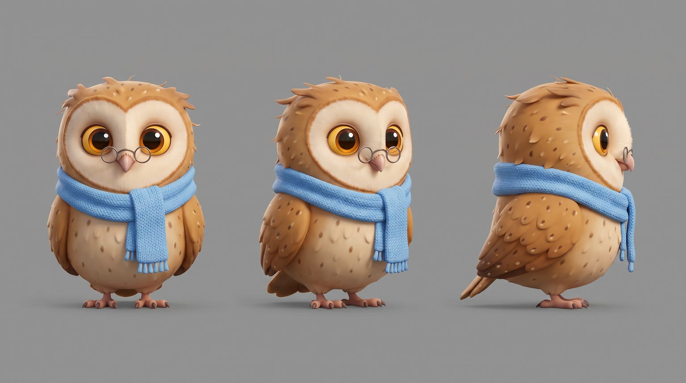
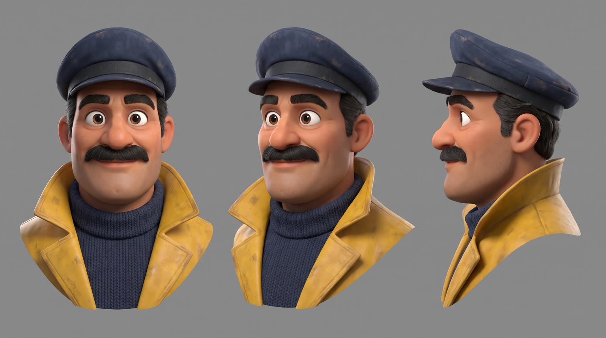
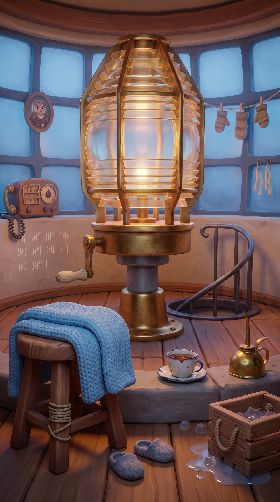
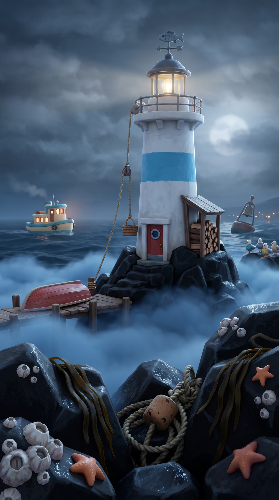
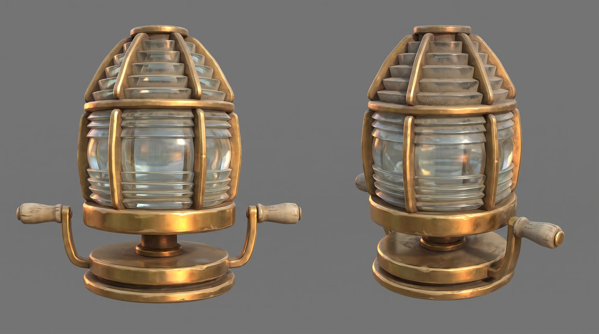
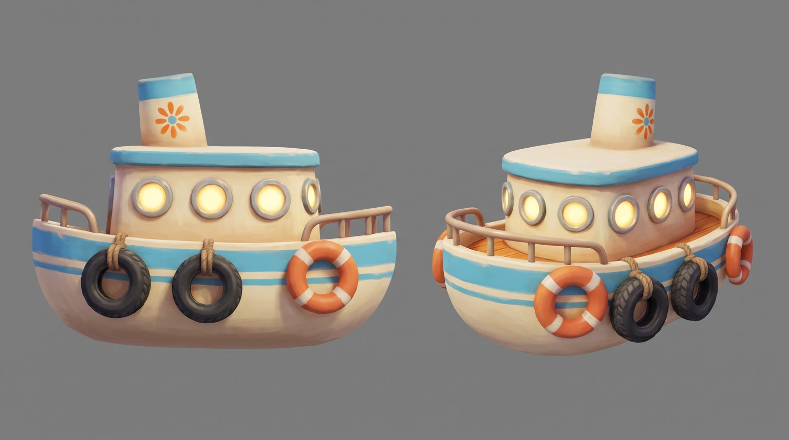
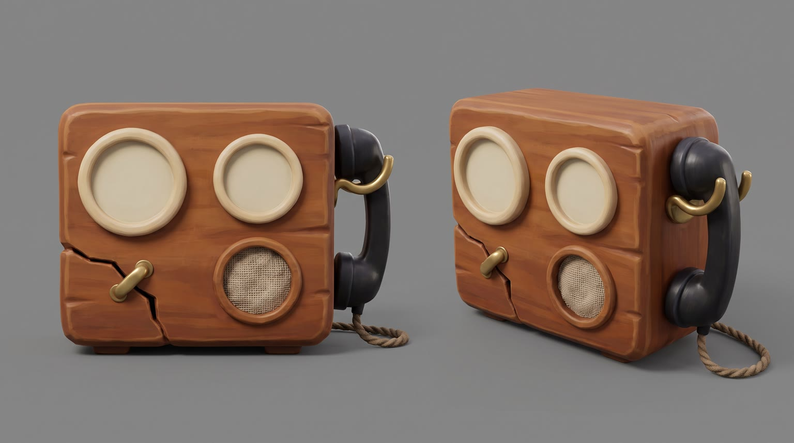

All templates · template.json · original storyboard
3D animated storypixar3d-01-night-owlThe Night Owl
The foggiest night of the year, and the lighthouse keeper is a tiny old owl who cannot keep her eyes open. A ferry is feeling its way toward the rocks. {{product.name}} keeps the light on.
Fit by product type
| ingested | great | a hand-sized bottle or snack at chin height is the classic scale gag, and staying awake is the story |
| applied | good | balm, face mist, eye cream or hand cream dabbed on with a wing tip to wake up against the cold |
| worn | stretch | human-size wearables become an oversized gag on a 30 cm owl; works for scarves, beanies, hoodies, blankets and glasses, not for shoes or fine jewellery |
| handheld | good | a torch, radio, earbuds or gadget she hugs with both wings to find the ship |
| carried | good | a bag bigger than she is, dragged out from under the stool, is a strong comic beat |
| home | good | lamps, kettles, speakers, heaters, pillows and blankets set up in the round lamp room; not for large furniture, which cannot fit up a lighthouse stair |
| consumable | good | the refill or pack that comes up in Teo's Sunday supply crate |
Refuses: products for children; alcohol; sleep aids or sedatives (the story is about staying awake); large furniture and appliances that could not fit in a small round lamp room
Cast, world and props (shipped with the template)







- Mabel has kept Point Hollow Light for 52 years, and her mother kept it before her; a portrait of her mother in a keeper's cap hangs by the stairs.
- Point Hollow is a lump of black rock three miles off the fishing town of Grey Harbor. The lens must be wound by hand every hour or it slows and dims.
- Every ship she sees safely past gets one chalk tally mark on the curved lamp-room wall; after 52 years the marks climb higher than she is able to reach, so the newest ones are tiny and low.
- Captain Teo Reyes has run the Marigold, the last ferry of the night, for 18 years. Every Sunday he sends a slatted wooden crate of supplies and groceries, packed in ice or straw, up to the gallery on a rope pulley, and they have never met face to face.
- Tonight is the thickest fog in forty years, and the Marigold is carrying twelve passengers home from the harvest fair.
Script: what each line must do
Right column is the worked example for Red Bull Sugarfree.
| Time | Speaker | Intent (template) | Example |
|---|---|---|---|
| 0.4-2.6 | mabel | Fixed: Stay awake, Mabel. One more ship. Max 8 words. Delivery: mumbled, eyes closing, patting her own cheek with a wing | Stay awake, Mabel. One more ship. |
| 4.8-6.8 | teo | Fixed: Point Hollow, we're blind out here. You there? Max 10 words. Delivery: steady but worried, over a crackly radio | Point Hollow, we're blind out here. You there? |
| 7.1-8.1 | mabel | Fixed: I'm here! I'm here! Max 6 words. Delivery: startled awake, feathers everywhere, grabbing the handset | I'm here! I'm here! |
| 11.2-13.6 | mabel | Product line: she says {{product.name}} (or its short spoken form) and the ONE benefit from product.benefits that keeps a tired keeper going through a cold, foggy night (awake, warm, bright, comfortable, clear-eyed, steady). benefit comes only from product.benefits, reworded no further than person and tense; brand spelled phonetically in the video prompt using product.phonetic Max 8 words. Delivery: bright and delighted after the product moment, a little wink | Red Bull Sugarfree. Wide awake, no sugar. |
| 18.4-20.0 | teo (off camera) | Fixed: I see your light! Turning now. Max 8 words. Delivery: relieved, laughing, radio crackle | I see your light! Turning now. |
| 23.6-24.8 | mabel | Fixed: Safe home, Marigold. Max 5 words. Delivery: soft and proud, waving | Safe home, Marigold. |
| 27.6-29.4 | mabel (off camera) | Tagline: product.tagline if the page has one, otherwise a 3 to 5 word line that ties the product to keeping the light on. Max 6 words. Delivery: sleepy whispered voiceover, smiling | Wiiings without sugar. |
Product-adjacent props by type
| ingested | the small slatted wooden ice crate with rope handles on a low shelf, the product chilled in melting ice chips |
| applied | the slatted wooden supply crate from Teo's Sunday pulley, the product nested in straw |
| worn | the slatted wooden supply crate from Teo's Sunday pulley, the product folded or set on top of the straw |
| handheld | the slatted wooden supply crate from Teo's Sunday pulley, the product nested in straw |
| carried | under the mended three-legged stool, the product pushed there for the long night |
| home | a corner of the round lamp room by the stool, where the product is already set up, half hidden under the knitted blanket |
| consumable | the slatted wooden supply crate from Teo's Sunday pulley, a pack of the product nested in straw |
Shots and how the product appears for each type
S01 · 0 to 2.8 s · absent
Mabel's huge amber eyes droop half shut behind her spectacles, her head nods, the lens behind her flickers amber and dims.
S02 · 2.8 to 4.6 s · absent
The lighthouse on the rocks in rolling fog, its beam weak and stuttering; far off the ferry's warm windows creep closer to the rocks.
S03 · 4.6 to 7.0 s · absent
Captain Teo at the ferry's wheel, radio handset to his mouth, fog pressing white against the bridge windows.
S04 · 7.0 to 8.4 s · absent
Mabel jolts awake, feathers puffed out in every direction, spectacles askew, snatching the radio handset off its hook.
S05 · 8.4 to 10.8 s · hero
Mabel digs the product out of the Sunday crate with both wings, the product at its true size beside her, label to camera.
| ingested | lifting {{product.visual}} upright out of the small wooden ice crate with both wings (chilled in the ice, or resting on top of it if it is a snack), the product reaching up to her chin, ice chips sliding off, condensation on it |
| applied | tugging {{product.visual}} upright out of the straw in the wooden supply crate with both wings, the product about as tall as her chin, label to camera |
| worn | hauling {{product.visual}} out of the straw in the wooden supply crate, comically big for a 30 cm owl, spilling over her wings, its best side to camera |
| handheld | heaving {{product.visual}} out of the straw in the wooden supply crate and hugging it upright against her chest with both wings, logo to camera |
| carried | dragging {{product.visual}} out from under the stool by its strap or handle, bigger than she is, logo to camera, a comic stagger |
| home | pulling the knitted blanket off {{product.visual}}, already set up in the corner of the lamp room, towering over her at its true size |
| consumable | pulling one {{product.visual}} out of its pack in the straw of the wooden supply crate with both wings, label to camera |
S06 · 10.8 to 14.0 s · in_use
She uses the product and her eyes pop fully open and sparkle, feathers fluffing smooth; she shows the product to camera and says the line.
| ingested | holding {{product.visual}} opened in both wings at chest height, just after a sip or a bite, the product reaching up to her chin, label to camera |
| applied | dabbing a little of {{product.visual}} onto her cheek feathers with one wing tip, then hugging it upright at chest height with the label to camera |
| worn | wearing {{product.visual}}, a comically oversized fit on a 30 cm owl (wrapped round her like a cloak, perched on her like a crown, or peered through like a window), puffing up proudly |
| handheld | using {{product.visual}} for a moment with both wings (switching it on, clicking it, snapping it onto something), then holding it upright at chest height with the logo to camera |
| carried | standing beside {{product.visual}}, now open on the stool with her night supplies neatly inside, one wing resting on it, logo to camera |
| home | perched on or beside {{product.visual}}, switched on or settled into, its light or comfort on her face |
| consumable | using one {{product.visual}} with a practised flick of her wing, then holding the pack upright at chest height with the label to camera |
S07 · 14.0 to 17.4 s · absent
Mabel throws her whole body on the brass crank, round and round; the giant lens spins up and blazes gold.
S08 · 17.4 to 21.4 s · absent
The blazing beam slices through the fog and lights up the rocks; the ferry swings away and turns safely.
S09 · 21.4 to 26.6 s · absent
From the gallery balcony, Mabel waves a wing as the ferry passes below, tiny passengers on deck waving lanterns up at her; the fog is thinning and the first blue of dawn shows.
S10 · 26.6 to 30 s · hero
Sunrise on the gallery: the product in the golden light, label to camera; Mabel is fast asleep beside it on her stool, wrapped in her blanket, spectacles on her forehead. Tagline and pack shot.
| ingested | {{product.visual}} standing upright on the white painted gallery ledge, label to camera, droplets on it |
| applied | {{product.visual}} standing upright on the white painted gallery ledge, label to camera |
| worn | {{product.visual}} laid or set neatly on the white painted gallery ledge, its best side to camera |
| handheld | {{product.visual}} resting upright on the white painted gallery ledge, logo to camera |
| carried | {{product.visual}} leaning against the white painted gallery ledge, logo to camera |
| home | {{product.visual}} standing on the gallery floor just inside the open lamp-room door, the sunrise falling across it |
| consumable | the pack of {{product.visual}} standing upright on the white painted gallery ledge, label to camera |
Generation units (templated prompts)
U1 · 9 s
9:16 stylized 3D animated feature film look, foggy night at a lighthouse, cool blue fog and warm amber lamp light, big expressive eyes, clean render. Shot 1 (0 to 2.8 s): close-up of @Image1 (Mabel, a tiny elderly owl in spectacles) in the lamp room, her eyes droop shut and her head nods while the lens behind her flickers; she mumbles, patting her cheek with a wing: "Stay awake, Mabel. One more ship." Shot 2 (2.8 to 4.6 s): wide exterior, the lighthouse on rocks in rolling fog, its beam weak and stuttering, a small ferry's warm windows creeping toward the rocks, a deep foghorn. Shot 3 (4.6 to 7 s): @Image2 (Captain Teo, stylized animated human) at the ferry wheel, fog on the windows, into a radio handset, worried: "Point Hollow, we're blind out here. You there?" Shot 4 (7 to 9 s): quick whip pan to Mabel jolting awake, feathers puffed, spectacles askew, grabbing the radio: "I'm here! I'm here!" Squash and stretch, comic timing. Native sound: wind, waves, foghorn, radio crackle, feather flurry. No music. No text on screen. Hulls have no names.
U2 · 6 s · exact-risk
9:16 stylized 3D animated feature film look, warm lamp room. Shot 1 (0 to 2.4 s): locked insert, @Image2 (Mabel, the tiny 30 cm owl) {{action.S05}}; the product matches @Image1 exactly at its true real-world size, front label fully visible, upright and undistorted. The product is a real photoreal object lit by the warm lamp with a contact shadow; everything else is animated. Shot 2 (2.4 to 6 s): medium close-up, Mabel {{action.S06}}; her eyes pop wide open and sparkle, feathers fluff smooth, and she says brightly with a wink: "{{line.L4}}" (say the brand as {{product.phonetic}}). Keep the product's shape, colours and label exactly as @Image1; it never bends or turns cartoon. Native sound: the product's own sound (a click, a snap, a pour, a rustle) if it has one, a happy hoot. No music.U3 · 13 s
9:16 stylized 3D animated feature film look, the night turns to dawn. Shot 1 (0 to 3.4 s): low orbiting wide in the lamp room, @Image1 (Mabel, the tiny owl) hangs her whole body off the brass crank and cranks round and round, the giant lens spins up and blazes gold with a deep whoomph. Shot 2 (3.4 to 7.4 s): wide at sea, upright and level, the golden beam slices the fog and lights the rocks; the small cream ferry with a sky-blue stripe swings away and turns to safety; a man's voice over a crackly radio, relieved and laughing: "I see your light! Turning now." Shot 3 (7.4 to 13 s): high shot over Mabel's shoulder on the gallery railing, she waves a wing as the ferry passes below with tiny passengers waving lanterns, fog thinning to first dawn blue; she says softly, proud: "Safe home, Marigold." The ferry moves forward along its heading, no sideways sliding. Native sound: gears, lamp whoomph, foghorn, distant cheers. No music. No text, hulls have no names.
U4 · 5 s · exact-risk
9:16 sunrise pack shot, stylized 3D animated world with one photoreal object. Slow push-in on {{action.S10}}; the product matches @Image1 exactly, photoreal, golden sunrise rim light over a calm sea, a soft contact shadow. Beside it @Image2 (Mabel, the tiny owl) sleeps on a stool wrapped in a knitted blanket, her chest rising and falling, a tiny snore. The product does not move or change shape. Clean empty sky above the product. Native sound: gulls, waves, the owl's snore. No music, no text.